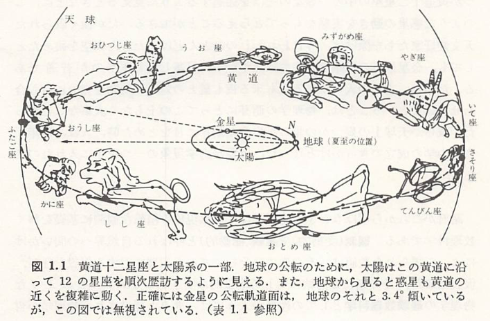
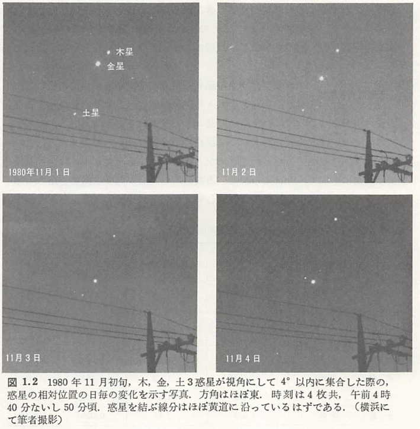
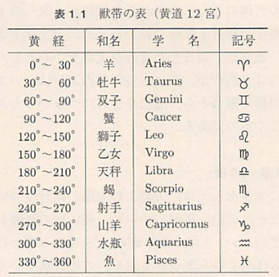

古典力学
昔々、まだ夜道を照らす灯もなく、人々の住まいは一日の半ば近くも真っ暗な闇の中に閉ざされ、その闇の奥から時折狼の遠吠えが、野原を渡る風の音に混じって気味悪く聞こえて来ていた頃、恐らく星は、人々にとって今よりも遥かに身近で重要な存在だった。一日の仕事を終えて粗末な褥（しとね）に身を横たえる前のひとときや、東の空の白むのももどかしく眠りから目覚めた時、彼らが決まって振り仰ぐ星空には幾つもの親しみやすい図形が待ち受けていた。その或るものは美しい乙女が天に舞う姿を思わせたし、また或るものは大きな獅子となって頭上から彼らを威圧するかのように見えた。
そのような図形や相互の配置のおおよそを、恐らく多くの人々はそらんじていたのであろう。実際、満足なあかりも、そしてまた、その下で読むべき何物をも持たなかった人々にとって、星空は彼らの涯しない夢を育むただ一つの、そしてそれ故にこそ何回となく読み古された物語のようなものだった。
月日の流れを知る目安として、子は親から、親はまたその親から教えられたことであっただろうが、夜明け前の東の空や日没間もない西の空に輝く星の一団は、何故か季節によっていつも決まっているように見えた。天球上の太陽の通り道としての黄道（地球の公転軌道面と天球との公転）は、このようにしていつとはなしに人々の知るところとなった。

上図のような黄道十二星座が、その通り道をたどる道しるべとして人々の間に根をおろしたのは、今からもう五千年以上も昔、バビロニア地方でのことといわれている。この黄道近く、これらの十二の星座を横切って、時には後戻りを交えながら、夜毎に少しづつその位置を変える幾つかの明るい星があった。こうして先ず、水星、金星、火星、木星、土星と呼ばれる比較的明るい5つの惑星が人々の前にその姿をあらわした。

今日、我々は例えば上図に示された一連の写真のように、いくつかの惑星がたまたま天球上の一か所に集まるように見えたり、あるいは惑星の一つが黄道十二星座の中の一等星のそばを通過するように見えるときなどに、このような惑星の動きを実感をもって捉えることができる。だが極く限られた天文愛好家たちを除けば、今日われわれのほとんどは、たとえ夜空を眺めたとしても、金星以外の惑星の存在には気づかずに見落としてしまうのが普通である。だから、古代の人々が来る夜も星との対話の時間を十分に持ち合わせたということは、物理学の萌芽にとってこの上もなく大事なことだった。彼らが天球上の幾つかの星の不思議な動きに目をとめた時、人は後年古典力学の成立のきっかけとなった。重要な力学現象の一つを手に入れたのである。
以下、「新版 天文学史」から
古代エジプト文明とともに、テイグリス、ユーフラテス両河に沿ったメソポタミア地方にも、古代バビロニアの文明が誕生した。この文明を築いた人々は、太陽と月の観測の他に、惑星たちの運行にも大きな関心をしめすようにみえる。このようになったのは、占星術上の必要もあったであろうが、多分に宗教的意味も込められていたと考えられている。惑星の他には、星々やそれらが作る星座の天空上の運行についても、観測がなされており、地球の赤道や南北両回帰線も発見されている。古代バビロニア人による天文学観測の成果は、古代のギリシャやローマへと、後に伝えられることになる。例えば、日月食については既に「サロスの周期」の存在が知られていた（BC721）。「サロス」とは古代バビロニア語で「物差し」を意味しており、18年と10か11日で、この日数6585は、223朔望月に当たっている。
古代人が注目した天文現象は、太陽、月、いくつかの惑星、明るい星々といった諸天体の天空上の運行であった。これらの天体の運行にみられる周期性が、彼らの一年を通じての生活の指針となったのであった。天文学とよばれる学問は、最初はこうした身近な天体を中心としたものであったのは当然だが、これらの天体の運行についての精密な観察の積み重ねから、暦法やそれにつながった占星術が誕生してくるのである。
古代に生きた人々は、天球上の太陽の運行について、その軌道とそれに沿う星座について、長い間の経験から学んだに違いない。１年の長さが365日あることについても、彼らは早くから気づいており、この日数をいくつかに等分して、彼らが代表的と考えた星座を割り当てたらしい。黄道と呼ばれる太陽の軌道に沿って、12の星座がとりあげられたが、これらは以下の表に示すようなもので、黄道12宮が考え出された。黄道に沿って南北8度に広がる幅の区域が、獣帯（Zodiac）と呼ばれている。獣帯も黄道12宮もともに、古代文明に共通するものだが、そうなったのは太陽の他に月や惑星も、この領域を経過することを古代人が経験から学んだからであろう。黄道12宮は古代バビロニアでまず考察され、これは後に古代ギリシャまで伝えられている。

太陽や月あるいは明るい星々の天空上の運行と、季節の移り変わりや1年の経過との間に因果関係があることを古代人は経験から学んだに違いない。彼らは、これら天体の運行について詳しく観察するようになり、やがて１年の長さを確定したり、月については満ち欠けの周期、つまり朔望月や恒星月の長さを知るようになったことであろう。あるいは、明るい金星の運行については、明け方か夕方にみえるようになる周期が、長い間にわたる観測から明らかにされたであろう。
太陽や月あるいは惑星などの天空上の運行がある周期性を示すことから、古代人は時の循環について理解するようになり、そこから時を詳しく表現するための暦が考案されてきたものと思われる。したがって、時を測る基準としては、身近な天体である太陽と月の運行における周期的な循環が、一番初めにとりあげられたことであろう。現在の私たちがいう太陽暦および太陰暦が古代文明を築いた人々によって考案されたのは、こんなわけで当然のことであったと思われる。
歴史上で太陽暦が最初に用いられたのは、古代エジプト文明においてであって、紀元前4241年のこととされている。ちょうどその頃は、日出直前にシリウスが昇ってくる時期と一致していたが、偶然にもまた、ナイル河の定期的な氾濫の開始期でもあった。農耕文明であった古代エジプト国家にとっては、この氾濫は農耕の開始を告げるもので、その後の約４か月が”氾濫季”とされた。次の約４か月が”地の回復季”で、このときに、種々の穀物の種子が播かれた。最後の約４か月が”乾季”で、農作物の収穫期に当たっていた。太陽暦の考察に至るヒントは、シリウスが日出直前に昇ってくる（伴日出、Heliacal rising）が、農業生産に大切な